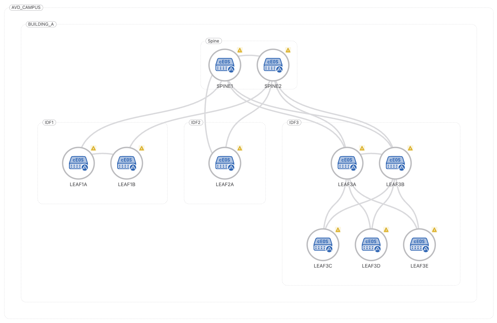
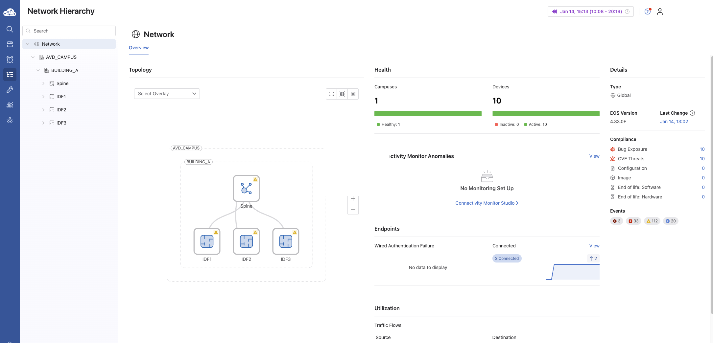
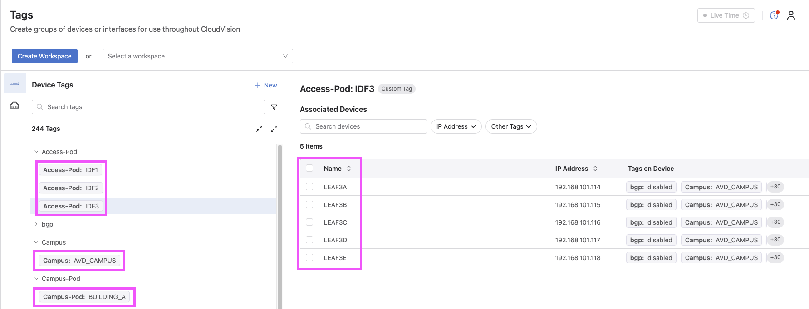
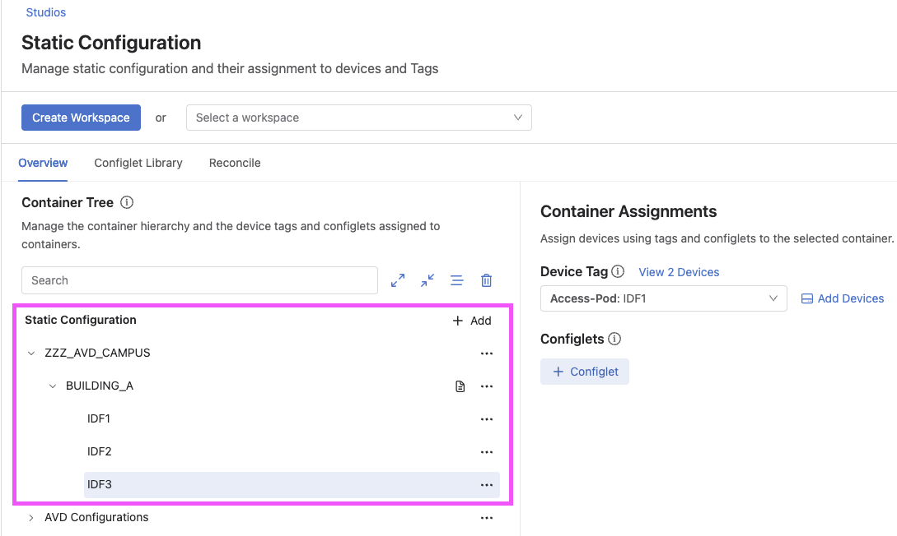
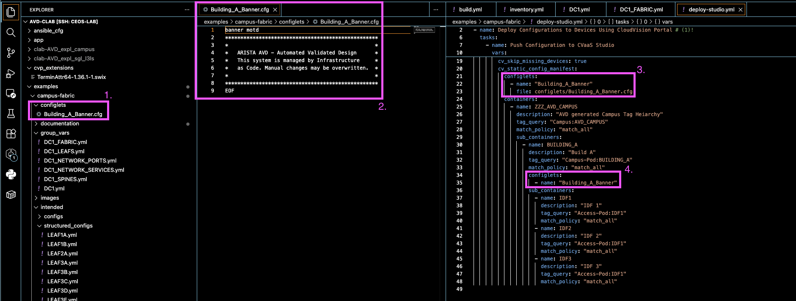
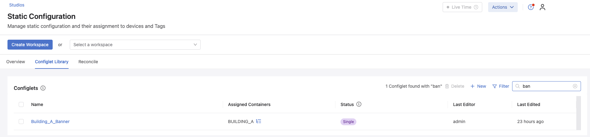
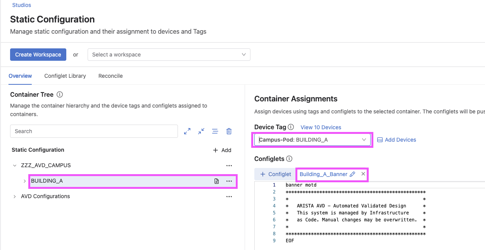
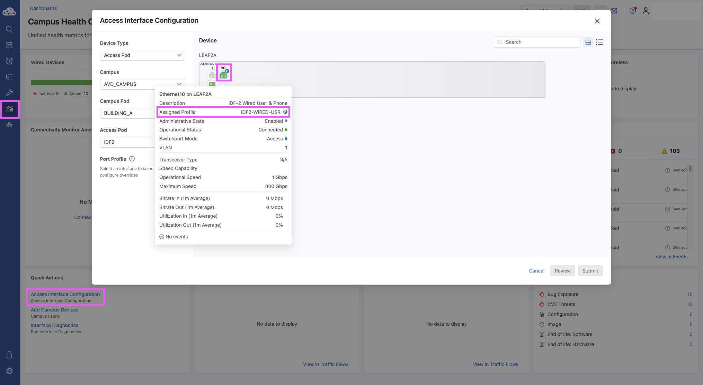
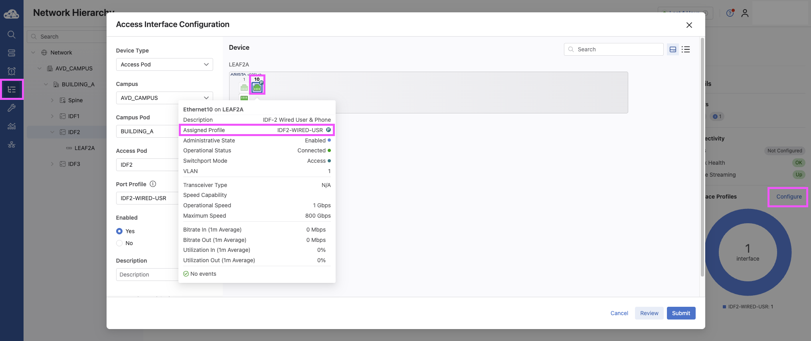
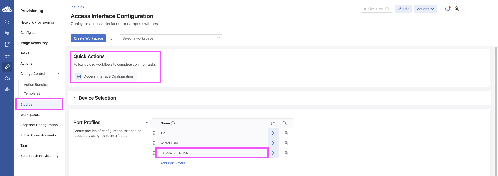

Using AVD-Generated CloudVision Campus Tags with Static Studios¶
Audience: Campus Network Operators & Automation Engineers
Scope: Day-1 (AVD) + Day-2 (CloudVision Operations)
Validated on: CVaaS / CloudVision 2024.3+TL;DR
This repository documents a practical Campus workflow where AVD-generated CloudVision Campus tags act as the integration point between Day-1 automation and Day-2 operations.AVD builds and maintains the campus fabric, while CloudVision consumes those tags to drive Campus topology, Network Hierarchy, Static Studios, and Quick Actions, enabling operators to safely manage port profiles and operational changes through the UI without breaking automation intent.
When deploying Campus fabrics with Arista AVD, a common challenge is determining how to cleanly integrate...
This repository documents a real-world, customer-inspired workflow that uses AVD-generated CloudVision Campus tags as the contract between these two domains.
By generating and applying Campus tags directly from AVD, CloudVision can:
- Render accurate Campus topology views
- Dynamically place devices into Studio container hierarchies
- Enable clean configlet inheritance without device-level assignments
- Support a hybrid operational model where AVD and Studios coexist
In this model:
- AVD is responsible for building and maintaining the Campus fabric and infrastructure
- CloudVision Studios are leveraged for topology visualization, container-based configuration, and ongoing day-2 operations
This guide walks through the architecture, tag generation, Studio container hierarchy, and configlet inheritance model using screenshots from a working lab environment.
High-Level Architecture¶

Figure 1 – Campus fabric topology generated and tagged by AVD
Overview¶
The arista.avd.eos_designs role can generate CloudVision Tags that are applied to devices and interfaces during fabric deployment. These tags are used by CloudVision to:
- Render accurate Campus Topology views
- Enable tag-based searches and filters
- Dynamically place devices into Studio container hierarchies
- Support hybrid AVD + Studios workflows
This functionality is supported on:
- CloudVision as a Service (CVaaS)
- On-prem CloudVision 2024.3.0 or later
Documentation References¶
-
CloudVision Tags (AVD):
https://avd.arista.com/5.7/ansible_collections/arista/avd/roles/eos_designs/docs/how-to/cloudvision-tags.html -
Static Configuration Studio Deployment:
https://avd.arista.com/5.7/ansible_collections/arista/avd/roles/cv_deploy/index.html#static-configuration-studio-deployment -
Access Interface Configuration Studio (Quick Actions):
https://www.arista.io/help/articles/provisioning-studios-built-in-access-interface#access-interface-configuration-studio
Enabling CloudVision Tag Generation¶
To globally enable CloudVision tag generation for Campus fabrics, both of the following settings must be enabled:
These options allow AVD to generate the metadata required for:
- Campus topology rendering
- CloudVision Network Hierarchy UI activation
- Studio-based workflows
CloudVision Network Hierarchy¶

Figure 2 – CloudVision Network Hierarchy UI activated by Campus tags
Campus Tag Variables¶
AVD assigns CloudVision tags using fabric variables or node_type_keys. The following variables are supported for Campus deployments:
| Variable | Description |
|---|---|
campus |
Logical campus name |
campus_pod |
Building or campus pod |
campus_access_pod |
Access pod / IDF (not assigned to spines) |
cv_tags_topology_type |
Campus node type (spine, leaf, member-leaf) |
Example: Fabric Tag Assignment¶
L3 Spine Configuration
l3spine:
defaults:
campus: AVD_CAMPUS
campus_pod: BUILDING_A
node_groups:
- group: SPINES
cv_tags_topology_type: spine
L2 Leaf Configuration
l2leaf:
defaults:
campus: AVD_CAMPUS
campus_pod: BUILDING_A
node_groups:
- group: IDF1
cv_tags_topology_type: leaf
campus_access_pod: IDF1
- group: IDF2
cv_tags_topology_type: leaf
campus_access_pod: IDF2
- group: IDF3
cv_tags_topology_type: leaf
campus_access_pod: IDF3
- group: IDF3_3C
cv_tags_topology_type: member-leaf
campus_access_pod: IDF3
CloudVision Tags Applied to Devices¶

Figure 3 – CloudVision device view showing AVD-generated Campus tags
Static Configuration Studio Using a Config Manifest¶
A Static Configuration Studio can consume the CloudVision tags generated by AVD using a cv_static_config_manifest.
The manifest:
- Reads tags applied by arista.avd.eos_designs
- Uses tag_query expressions to dynamically place devices
- Builds a container hierarchy based on Campus structure
- Applies configlets to containers and inherited devices
Example Static Config Manifest¶
cv_static_config_manifest:
configlets:
- name: Building_A_Banner
file: configlets/Building_A_Banner.cfg
containers:
- name: ZZZ_AVD_CAMPUS
description: AVD generated Campus Tag Hierarchy
tag_query: "Campus:AVD_CAMPUS"
match_policy: match_all
sub_containers:
- name: BUILDING_A
description: Building A
tag_query: "Campus-Pod:BUILDING_A"
match_policy: match_all
configlets:
- name: Building_A_Banner
sub_containers:
- name: IDF1
description: IDF 1
tag_query: "Access-Pod:IDF1"
match_policy: match_all
- name: IDF2
description: IDF 2
tag_query: "Access-Pod:IDF2"
match_policy: match_all
- name: IDF3
description: IDF 3
tag_query: "Access-Pod:IDF3"
match_policy: match_all
Static Studio Container Hierarchy¶

Figure 4 – Static Configuration Studio containers built from tag queries
Deploying the Manifest with cv_deploy¶
tasks:
- name: Deploy CloudVision configuration
ansible.builtin.import_role:
name: arista.avd.cv_deploy
vars:
## Deploy full hierarchy of containers and configlets into CloudVision “Static Configuration Studio”
cv_static_config_manifest:
configlets:
- name: "Building_A_Banner"
file: configlets/Building_A_Banner.cfg
containers:
- name: ZZZ_AVD_CAMPUS
description: "AVD generated Campus Tag Heiarchy"
tag_query: "Campus:AVD_CAMPUS"
match_policy: "match_all"
sub_containers:
- name: BUILDING_A
description: "Build A"
tag_query: "Campus-Pod:BUILDING_A"
match_policy: "match_all"
configlets:
- name: "Building_A_Banner"
sub_containers:
- name: IDF1
description: "IDF 1"
tag_query: "Access-Pod:IDF1"
match_policy: "match_all"
- name: IDF2
description: "IDF 2"
tag_query: "Access-Pod:IDF1"
match_policy: "match_all"
- name: IDF3
description: "IDF 3"
tag_query: "Access-Pod:IDF1"
match_policy: "match_all"
AVD performs the following actions:
- Uploads configlets into the Configlet Library
- Creates the Studio container hierarchy
- Places devices based on tag queries
- Applies configlets to all matching devices
Root Container Ordering Behavior¶
When deploying or adding new root containers, the cv_deploy role places all AVD-managed root containers at the top of the Studio container tree.
Note This automated behavior may reorder containers that were manually arranged in the UI.
Configlet Inheritance Example¶
This section illustrates how AVD manages configlets and how those configlets are inherited by devices through a Static Configuration Studio container hierarchy.
The workflow is as follows:
- AVD references a raw
.cfgconfiglet file from the repository. - The configlet is declared in the
configletssection of the Static Studio manifest. - The configlet is associated with the appropriate container in the manifest hierarchy.
- CloudVision applies the configlet to all devices that match the container’s tag query.
AVD Configlet Declaration in the Manifest¶

AVD references the raw configuration file and includes it in the manifest so it can be managed by CloudVision.
Configlet Deployed to the CloudVision Library¶

During the cv_deploy phase, AVD uploads the configlet into the CloudVision Configlet Library.
Configlet Associated with the Studio Container¶

The configlet is attached to a Static Studio container.
All devices assigned to this container automatically inherit the configlet.
Summary¶
By combining:
- AVD-generated CloudVision Campus tags
- Static Studio manifests
- Tag-based container placement
You gain a scalable, deterministic, and supportable integration between AVD and CloudVision Studios, while maintaining clear ownership boundaries between build-time automation and day-2 operations.
Day-2 Operations (CloudVision Campus)¶
This section focuses on Day-2 operational workflows using the CloudVision Campus UI, with emphasis on how network operators interact with the platform after Day-1 provisioning has been completed by AVD.
Unlike Day-1 automation, where AVD is the source of truth, Day-2 operations leverage CloudVision Studios, Network Hierarchy, and Quick Actions to safely make operational changes at scale.
- Access Interface Configuration Studio (Quick Actions):
https://www.arista.io/help/articles/provisioning-studios-built-in-access-interface#access-interface-configuration-studio
Entry Point: Campus Health Overview¶
For network operators assigned a Campus profile, the default landing page after logging into CloudVision is the Campus Health Overview dashboard.
This dashboard provides:
- High-level campus health status
- Visibility into wired and wireless domains
- Direct navigation into Campus-specific operational workflows

From this view, operators can quickly pivot from monitoring to action without navigating away from the Campus workflow context.
Navigating the Network Hierarchy¶
From the Campus Health Overview, operators can navigate to the Network Hierarchy UI, which represents the logical campus structure built using AVD-generated CloudVision Campus tags and containers.
The Network Hierarchy enables operators to:
- View sites, buildings, floors, and other logical groupings
- Understand configuration and policy inheritance scopes
- Target operational changes with precision and confidence
Quick Actions menus are accessible per container, directly reflecting the underlying tag-based hierarchy created during Day-1 deployment.
Within the Quick Actions workflow, the UI presents a front-panel view of the switch, allowing operators to single-select or multi-select switchports and assign them to predefined port profiles.

Because configuration and policies are associated at the container level, hierarchy placement directly determines what devices inherit.
Quick Actions: Operational Changes at Scale¶
Within the Campus workflow, operators can launch Quick Actions directly from the Campus dashboards or Network Hierarchy views.
One of the most common Day-2 use cases is setting or updating switch port profiles.
Quick Actions allow operators to:
- Select one or more devices or ports
- Apply predefined port profiles
- Execute changes without modifying AVD source files
Example: Applying Switch Port Profiles¶
Using Quick Actions, an operator can:
- Select a container, device, or specific interfaces
- Choose the appropriate Switch Port Profile
- Review the proposed change
- Execute the action through CloudVision
This workflow ensures:
- Consistency across the campus
- Reduced operational risk
- Fast response to Day-2 requirements

Key Takeaways for Day-2 Operations¶
- AVD remains the Day-1 source of truth
- CloudVision enables controlled Day-2 changes
- Network Hierarchy and tags define operational scope
- Quick Actions provide safe, repeatable workflows for operators
This separation allows infrastructure teams to maintain strong automation discipline while empowering operations teams with the flexibility required for daily campus management.
About This Repository¶
This repository contains personal lab work and reference material created to explore hybrid AVD and CloudVision Campus workflows.
It is not official Arista documentation or a supported design guide.